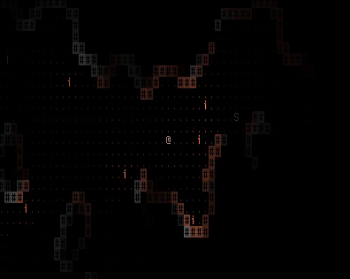

Torch — A Terminal Roguelike About Fire and Light
Modern graphics on a terminal are possible, and it can be beautiful.
Note: This blog may become very outdated very soon! Torch is continually under development, so the details laid out here may not stay accurate forever.
Background
Terminal, or at least terminal-esque, roguelikes have come very far from their origins in BSD's Rogue (1980)1. And although Rogue itself has lost its popularity over the decades, its close descendant, NetHack (1987), maintains a following of players still desperately trying to recover the Amulet of Yendor. On the more modern, or rather graphical, side, we have games like Freehold Games' Caves of Qud (2015), which introduces a beautiful new look to the original Rogue aesthetic.
However, there seems to be a lack of gradients in terminal roguelikes, gradients that we typically would see in graphical video games arising out of their comparatively complex lighting systems. Dazzling renders of sunlight creeping onto mountain precipices, or the soft flickering of a torch onto stone dungeon walls. This, of course, is due to the historical limitations of terminals only being capable of displaying text in 16, more recently 256, colours2. Today, we see a resurgence of "8-bit" art. This movement of nostalgia manifests in terminal-esque games as well, with games like the aforementioned Caves of Qud thus clinging to this "retro" aesthetic with brightly and contrastingly coloured glyphs, and, I believe, with modern terminals capable of "true" or "direct color", holding back the potential of the terminal medium3.

Introducing Torch
I began Torch as a project to try to change this. It takes great visual inspiration from video games like Frictional Games' Amnesia: The Dark Descent (2010) and Capybara Games' BELOW (2018), introducing a more complex light interaction system that gives it the rich graphics akin to those of graphical games. It tells a typical roguelike monomyth of venturing deep into the unknown, slaying vicious monsters, and ultimately save the world from an evil power, but adds a twist through its mechanic of light4, being inspired by Asobo Studio's A Plague Tale: Innocence (2019). In a world enveloped by darkness, fire becomes your greatest friend in staving the monsters of the night.
Torch is very much still in development, and is not close to being a complete game, but I have yet to find another terminal video game that features its light casting system, or in other words, that looks so good. The latest C build (as there is a Rust rewrite underway) features an expansive cavern inhabited by snakes and mysterious "floaters" that will extinguish your torches, for you to light up and demonstrate just the surface of what direct color terminals are capable of5.
The Narrative of Torch
Fiery the Angels rose, and as they rose deep thunder roll’d
Around their shores, indignant burning with the fires of Orc…— William Blake
Before the events of the game takes place, a cataclysmic event began to ravage the world. Mayugoro and his firey legions enacted what has come to be known as the Scorching, blackening the land and enveloping the world with a blanket of soot and ash that blots out the sun, leading the world to begin to freeze. The people live in fear of their conflagarant overlord, as they must huddle around the same flames that ruined their homelands to stay alive.
You are the Torch-Bearer. One who has bravely decided to venture from the illuminated safeties of the villages that remain, to fight the shadows that lust for human flesh, and to ultimately defeat the tyrrany of Mayugoro, end the Scorching, and bring the light of the sun back to a dying world.
Acknowledgements
Thanks to all my friends that have contributed to the development of Torch. I'd also like to thank my dear friend, Tianlin Qu, for his encouragement and his role in Torch's development.
1 Which also gave us the standard blight of terminal programs, curses.
2 Though applications rarely use more than the first sixteen anyway.
3 Whether we should really still be developing applications, particularly video games, for the terminal anymore is a different discussion however.
4 To those familiar with NetHack (spoiler ahead), torches in Torch operate as a more limited Elbereth.
5 The current "win condition" is to pick up a golden sword that is randomly placed within the cavern. Not super interesting, but at least you can win somehow.